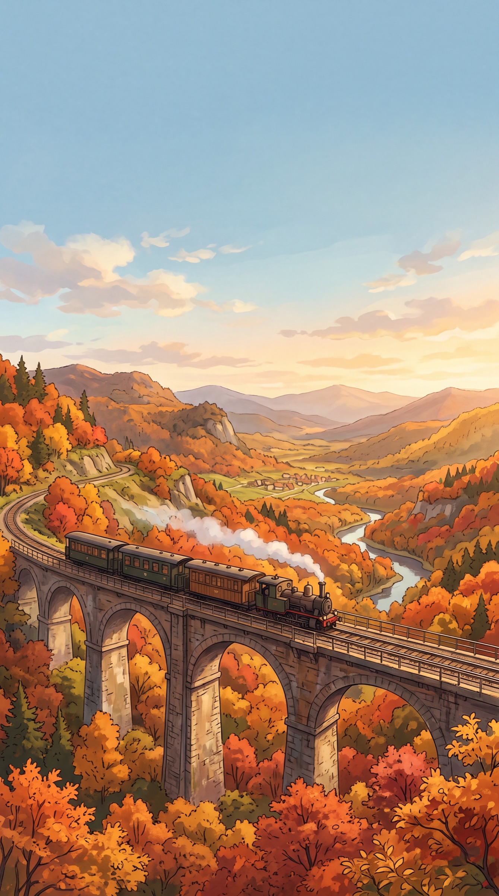

09:41
Sonbahar Treni
Sonbahar Treni: kahverengi ve mavi tonlarında, doğa manzaralı 4K telefon duvar kağıdı. Reklamsız, üyeliksiz, ücretsiz indir.
- Çözünürlük
- 3072 × 5504
- Kalite
- 4K Ultra HD
- Cihaz
- Telefon · 9:16
- Boyut
- JPG · 2,4 MB
- Eklenme
- 3 Ekim 2026
- Lisans
- Ücretsiz, kişisel kullanım
Renk paleti
Nasıl arka plan yapılır?
- iPhone: İndir → Dosyalar'dan görseli aç → Paylaş → “Görüntüyü Kaydet”. Sonra Fotoğraflar'da Paylaş → “Duvar Kağıdı olarak kullan”.
- Android: İndir → Galeri'de görseli aç → ⋮ → “Duvar kağıdı olarak ayarla”.